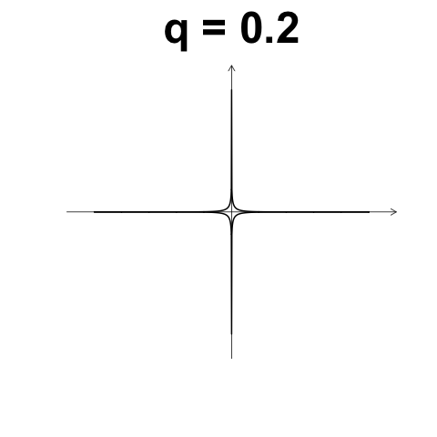
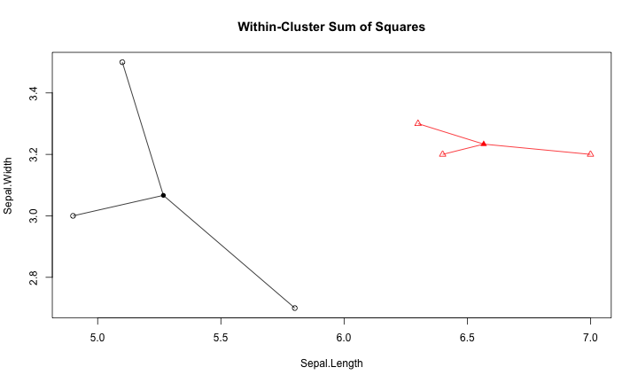
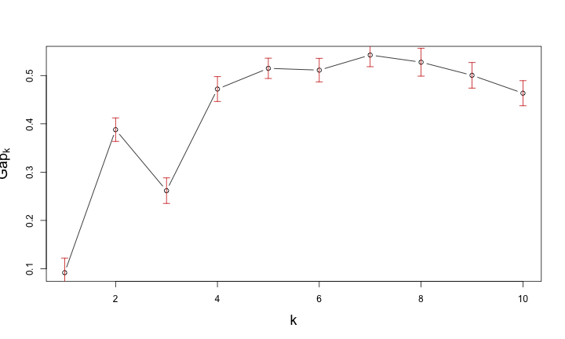

- 什麼是Data Mining
- Frequency Pattern Mining
- Similarity and Distance
- Clustering
- Classification
- Text Mining
Data Mining
Wush Wu
課程大綱
什麼是Data Mining
Data Mining v.s. Machine Learning v.s. Statistics
- Data Mining: Find the value from the data
- Machine Learning: Learn the pattern from the data
- Statistics: Making inference based on assumptions
Frequency Pattern Mining
歸納
- 交易紀錄
- {milk, bread}
- {butter}
- {beer, diapers}
- {milk, bread, butter}
- {bread}
- 規則
- milk ==> bread
Frequency Pattern Mining
- Transaction(交易紀錄)
- 一名顧客所購買的物品清單：{milk, bread}
- Item
- 可購買的物品：milk、break、beer...
- Itemset
- 可購買的物品集合，例如：{milk, break}
Frequency Pattern Mining
- Rule
- 物品之間的關聯：\(X\) ==> $Y$（\(X\), $Y$又被稱為itemset）
- \(X\)(LHS itemset) 和 \(Y\)(RHS itemset) 不能包含相同的物品
- \(X\) => \(Y\) 代表當 \(X\) 出現在一個transaction時，$Y$也會出現
- 例： milk ==> bread
Mining by Computer
- 規則成立的門檻
- 交易紀錄
- {milk, bread}
- {butter}
- {beer, diapers}
- {milk, bread, butter}
- {bread}
- 規則
- milk ==> bread (100%, 2/5)
- beer ==> diapers (100%, 1/5)
- milk, bread ==> butter (50%, 2/5)
- 交易紀錄
Support
- 給定 itemset \(X\), 有多少個比率的Transaction包含 \(X\) 稱為 \(Supp(X)\)
- 交易紀錄
- {milk, bread}
- {beer, diapers}
- {milk, bread, butter}
- {bread}
- \(Supp(\{\text{milk}\}) = \frac{2}{4}\)
- \(Supp(\{\text{milk, bread}\}) = \frac{2}{4}\)
Confidence
- 給定 rule \(X \Rightarrow Y\), \(Conf(X \Rightarrow Y) = \frac{Supp(X \cup Y)}{Supp(X)}\)
- 交易紀錄
- {milk, bread}
- {milk}
- {milk, bread, butter}
- {butter}
- \(Conf(\{\text{bread => milk}\}) = \frac{2}{2}\)
- \(Conf(\{\text{milk => bread}\}) = \frac{2}{3}\)
Frequency Pattern Mining
- 規則的Confidence要明顯 => 準
- 規則的Support要高 => 有影響
\(Supp\) 和 \(Conf\) 的不足
- 交易紀錄
- {milk, bread}
- {milk}
- {milk, bread, butter}
- {bread}
- milk => bread:
- \(Supp(milk) = 75\%\), \(Conf(milk \Rightarrow bread) = 67\%\)
- \(Supp(bread) = 75\%\): 所以要促銷麵包的時候，需要推廣牛奶嗎？
Lift
- \(Lift(X \Rightarrow Y) = \frac{Supp(X \cup Y)}{Supp(X) \times Supp(Y)} = \frac{Conf(X \Rightarrow Y)}{Supp(Y)}\)
- 交易紀錄
- {milk, bread}
- {milk}
- {milk, bread, butter}
- {bread}
- \(Lift(milk \Rightarrow bread) = \frac{\frac{2}{4}}{\frac{3}{4} \times \frac{3}{4}} = \frac{8}{9}\)
Frequency Pattern Mining
- 規則的Confidence要明顯 => 準
- 規則的Support要高 => 有影響
- 規則的Lift要高 => 與背景比較後提升的程度
練習
- 請完成RDataMining-01-Association-Rule
Clustering and Similarity
叢集分析
- 物以類聚
- 近朱者赤、近墨者黑
- 叢集分析的基礎：資料之間的距離、資料之間的相似度
「相似度」與「相異度」
相似度(Similarity)與相異度(Dissimilarity)
- 相似度：越大越像
- 相異度：越小越像
- 距離
- 兩者可以用數學運算做變換
- 常見的相似度常常介於0與1之間
- 定義相異度： 1 - 相似度
二元類別型變數
- \(p = (1, 0, 0, 0, 0)\), q = \((1, 1, 0, 1, 0)\)
- \(M_{11} = 1, M_{00} = 2\)
- \(M_{10} = 0, M_{01} = 2\)
- Simple Matching Coefficient(SMC): \(\frac{M_{11} + M_{00}}{M_{01} + M_{10} + M_{11} + M_{00}}\)
- Jaccard Index: \(\frac{M_{11}}{M_{01} + M_{10} + M_{11}}\)
標籤 ==> Jaccard Index
- 使用者A : {男性、單身、電玩、上班族}
- 使用者B : {男性、旅遊、電玩、學生}
- Jaccard Index: \(\frac{\left| A \cap B \right|}{\left| A \cup B \right|}\)
- J(使用者A, 使用者B) ： \(\frac{2}{6}\)
- \(v := \{i_{男性}, i_{單身}, i_{電玩}, i_{上班族}, i_{旅遊}, i_{學生}, i_{女性}, ...\}\)
- \(v_A = \{1, 1, 1, 1, 0, 0, 0, ...\}\)
- \(v_B = \{1, 0, 1, 0, 1, 1, 0, ...\}\)
利用爬蟲技術收集決標資料
- http://web.pcc.gov.tw/tps/main/pms/tps/atm/atmAwardAction.do?newEdit=false&searchMode=common&method=inquiryForPublic&pkAtmMain=1126170&tenderCaseNo=931116-2
- http://web.pcc.gov.tw/tps/main/pms/tps/atm/atmAwardAction.do?newEdit=false&searchMode=common&method=inquiryForPublic&pkAtmMain=1495141&tenderCaseNo=CG590C
- http://web.pcc.gov.tw/tps/main/pms/tps/atm/atmAwardAction.do?newEdit=false&searchMode=common&method=inquiryForPublic&pkAtmMain=1501992&tenderCaseNo=EA95029M008
- http://web.pcc.gov.tw/tps/main/pms/tps/atm/atmAwardAction.do?newEdit=false&searchMode=common&method=inquiryForPublic&pkAtmMain=1518749&tenderCaseNo=KHC1521-9515
- http://web.pcc.gov.tw/tps/main/pms/tps/atm/atmAwardAction.do?newEdit=false&searchMode=common&method=inquiryForPublic&pkAtmMain=1799822&tenderCaseNo=TPC-MS-FAB-S2
- http://web.pcc.gov.tw/tps/main/pms/tps/atm/atmAwardAction.do?newEdit=false&searchMode=common&method=inquiryForPublic&pkAtmMain=1854786&tenderCaseNo=960625
利用爬蟲技術取得公司董監事名單
| id | name | parent | birthday | magnate |
|---|---|---|---|---|
| 00000000 | 復華廣告有限公司 | NA | 1976-05-24 | |
| 00000016 | 富台機械開發建設有限公司 | NA | 1979-04-30 | 王振林 |
| 00000022 | 泰煜建材股份有限公司 | NA | NA | |
| 00000037 | 茂盛工程有限公司（同名） | NA | 1978-07-08 | |
| 00000043 | 啟猛股份有限公司（無統編） | NA | 1984-05-22 | 鄭添發 |
| 00000058 | 詠詳鐵工廠股份有限公司（無統蝙） | NA | 1984-03-07 | 吳秋進,吳戴麗珍,謝素梅,吳秋龍 |
利用Jaccard Index 計算公司董監事相似度
| id | name | parent | birthday | magnate | |
|---|---|---|---|---|---|
| 555426 | 27229231 | 尚達塩業股份有限公司 | NA | 2005-05-30 | 吳秀里,周永紹,周博元,周碩良 |
| 1067348 | 70794974 | 上達糧業國際股份有限公司 | NA | 2002-01-08 | 吳秀里,周永紹,周博元,周碩良 |
- Jaccard Index 為 1
數值型變數：Cosine Similarity
- \(X_1, X_2 \in \mathbb{R}^d\)
- Cosine Similarity： \(\frac {X_1 \cdot X_2}{\left\lVert X_1 \right\rVert \left\lVert X_2 \right\rVert}\)

數值型變數：Correlation
- \(X_1, X_2 \in \mathbb{R}^d\)
- Let \(X_1' = \frac{X_1 - mean(X_1)}{sd(X_1)}\), \(X_2' = \frac{X_2 - mean(X_2)}{sd(X_2)}\), Correlation: \(X_1' \cdot X_2'\)

距離（相異度）
- \(d(x, y)\)
- $d(x, y) \geq 0$：距離一定是正的
- $d(x, y) = 0 \Leftrightarrow x = y$：相同的物品 $\Leftrightarrow$距離為0
- $d(x, y) = d(y, x)$：距離是對稱的
- $d(x, z) \leq d(x, y) + d(y, z)$：三角不等式
數值型變數： $L_p$距離
- \(X_1 = (x_{1,1}, x_{1, 2}, ..., x_{1, d}) \in \mathbb{R}^d\)
- \(X_2 = (x_{2, 1}, x_{2, 2}, ..., x_{2, d}) \in \mathbb{R}^d\)
- \(L_p(X_1, X_2) = \left( \sum_{k = 1}^d {\left| x_{1, k} - x_{2, k} \right|^p} \right)^{1/p}\)
數值型變數： Manhattan Distance, \(L_1\)
\[d(i,j) = \left\lVert x_{i,1} - x_{j,1} \right\rVert + \left\lVert x_{i,2} - x_{j,2} \right\rVert + \dots + \left\lVert x_{i,p} - x_{j,p} \right\rVert\]
數值型變數： Euclidean Distance, \(L_2\)
\[d(i,j) = \sqrt{ \left( x_{i,1} - x_{j,1} \right)^2 + \left( x_{i,2} - x_{j,2} \right)^2 + \dots + \left( x_{i,p} - x_{j,p} \right)^2 }\]
數值型變數： Maximum Distance, \(L_{\infty}\)
\[d(i, j) = max_{k=1}^p { \left\lVert x_{i,k} - x_{j,k} \right\rVert }\]
數值型變數 Minkowski Distance
\[d(i,j) = \left( \left\lVert x_{i,1} - x_{j,1} \right\rVert^q + \left\lVert x_{i,2} - x_{j,2} \right\rVert^q + \dots + \left\lVert x_{i,p} - x_{j,p} \right\rVert^q \right)\]

Gower's Dissimilarity coefficient
- \(x_i = (x_{i,1}, x_{i,2}, x_{i,3}, ..., x_{i,p})\)
- \(x_j = (x_{j,1}, x_{j,2}, x_{j,3}, ..., x_{j,p})\)
- 如果第一個變數是順序尺度或數值變數
- \(s_{i,j,1} = \frac{\left\lVert x_{i,1} - x_{j,1} \right\rVert}{r_1}\)
- $r_1$代表第一個變數的range
- \(0 \leq s_{i,j,1} \leq 1\)
- \(s_{i,j,1} = \frac{\left\lVert x_{i,1} - x_{j,1} \right\rVert}{r_1}\)
Gower's Dissimilarity Coefficient
- \(x_i = (x_{i,1}, x_{i,2}, x_{i,3}, ..., x_{i,p})\)
- \(x_j = (x_{j,1}, x_{j,2}, x_{j,3}, ..., x_{j,p})\)
- 如果第二個變數是類別變數
- \(s_{i,j,2}\) 則是 $1 - $Jaccard Index
- \(0 \leq s_{i,j,2} \leq 1\)
Gower's Dissimilarity Coefficient
- \(s_{i,j} = \frac{\sum_{k=1}^p {w_k s_{i,j,p}}}{\sum_{k=1}^p {w_k}}\)
- Gower's Similarity coefficient 就是這些similarity指標的weighted sum
Gower's Dissimilarity Coefficient
library(cluster)
d <- daisy(iris, metric = "gower")
如何挑選Similarity
- 視目標與應用而定
- 利用1NN 分類的結果來評估Similarity的品質(後述)
- 數值變數的baseline：
- 先標準化
- $L_2$距離
Hierarchical Clustering
Dendrogram
- 決定資料點之間的距離
- 將相鄰的資料點合併成一個Cluster
- 決定資料點與Cluster之間的距離
- 決定Cluster與Cluster之間的距離
- 由近到遠依序合併資料點與Clusters...
Dendrogram
Hierarchical Clustering
- 給定Dendrogram, 如果要找出k個Cluster，就使用當全部資料被分成k個Cluster的瞬間當成結果
如何評斷Clustering結果的好壞？
- Cluster之內的距離要短
- Cluster之間的距離要長
如何挑選Cluster的個數?
- 挑選Clustering結果好的Cluster個數
- 透過dendrogram的高度差距來比較
Center-based Clustering
K-Means Clustering
- 資料間的距離
- 中心點的個數(與起始值)
如何評估k-means的分群結果好壞？
Within-Cluster Sum of Squares

Gap Statistic for Estimating the Number of Clusters

Density-based Clustering
DBSCAN
- 資料間的距離
- Reachability distance（判斷有沒有連接）
- Reachability minimum number of points （判斷是不是雜訊）
分群總結
- 分群就是:
- 定義資料間的距離（Similarity）
- 套用分群演算法
分群比較

練習
- 請完成RDataMining-02-Clustering
Similarity and Classification
Classification
- Training Datset:
- 每個資料點均有： 屬性 \(X\), 標籤（類別型變數） \(Y\)
- Testing Dataset:
- 在僅觀察到 \(X\) 的狀態下去預測 \(Y\)
- Logistic Regression / SVM / Decision Tree / Gradient Boosted Decision Tree...
Nearest-Neighborhood
- 給一筆Testing data，找與它最近的Training data（鄰居）
- 用鄰居的類別猜測Testing data的類別

K Nearest-Neighborhood (k-NN)
- 給一筆Testing data，找與它最近的前K個 Training data（鄰居）
- 用鄰居的類別中，出現次數最多的類別猜測Testing data的類別
k-NN 常用於評量Similarity
- k-NN 沒有太多的假設
- 物以類聚
- Similarity
- k-NN 的效果和Similarity 的挑選很關鍵
- http://www.cs.ucr.edu/~eamonn/time_series_data/
練習
- 請完成RDataMining-03-Classification
Text Mining
文字資料範例：ptt 笨版文章
作者frank9712520 (YFChen)看板StupidClown標題[健忘] 手機不見了...(代PO)時間Wed Dec 23 02:29:15 2015
以下是朋友要求代PO的...
剛剛手上拿著手機在回人FB訊息回到一半，突然被我媽叫離開原本的位置，我媽找完我沒
事後就忘記手機放在哪裡了
用我媽的手機打過去，打通了，沒鈴聲，我關了靜音...
還很興奮地跑到電腦前要用Google Device 放鈴聲找，結果他要我輸入密碼
這兩個多月來當兵每次休假就叫我換密碼，在加上與世隔絕了36天，根本不記得密碼了，
按忘記密碼，可是經過一連串驗證他要寄認證信到我的備用信箱(yahoo的) 但是到我發完
文已經過了快一個小時還時沒收到信...
乾........................
距離上次變更密碼...54天前（因為帳號久未活動，所以要求更改密碼）
http://i.imgur.com/2u4GMKb.jpg
啊就是手機不見才要登入啊...結果現在又要傳訊息到手機
文字資料的特色
- 容易獲取、俯拾即是
- 非結構化、長短不一、沒有明顯規律
- 挖掘規律是個挑戰
- 由各種字彙組成
- 常用的資料分析技術不容易套用在文字資料上
- 整理資料的挑戰較高
文字資料的結構化
- 找出方法將非結構化的文章轉變成結構化的資料
- 後續可針對各種應用問題，與其他ML或DM方法結合
文字資料的清理
- 移除不必要的字元，如空白、標點符號
- 統一大小寫
- 斷詞
- 英文資料使用空白做切割
- 中文資料可以使用Open Source斷詞引擎搭配詞庫
Term Document Matrix (TDM)
- 將文字資料在斷詞後，轉換為結構化資料的方式
- 以文章為單位
- 每篇文章是一筆資料
- 將文章中包含的詞彙當成屬性
- 運用大量布林屬性來標註文章中有沒有包含特定的詞彙
Feature Hashing
- 一種加速TDM處理效能的技巧
- TDM 需要建立： 字彙 ==> 屬性位置 的對應表
- Feature Hashing 運用Hashing Algorithm來做對應
- 喪失對屬性的解釋力

範例：Large Movie Review Dataset
TDM

Sentiment Analysis via R, FeatureHashing and XGBoost
- 文章網址：https://cran.r-project.org/web/packages/FeatureHashing/vignettes/SentimentAnalysis.html
- 運用文章中介紹的技巧搭配Machine Learning套件，即可達到Benchmark的準確度
n-gram
- TDM 是標記字彙有無在文章之中
- n-gram 是將相鄰的n個字彙視為一個字彙
n-gram 範例
剛剛手上拿著手機在回人FB訊息回到一半，突然被我媽叫離開原本的位置，我媽找完我沒事後就忘記手機放在哪裡了- 斷詞：
剛剛 手上 拿 著 手機 在 回人 FB 訊息 回到 一半 突然 被 我媽 叫 離開 原本 的 位置 我媽 找 完 我 沒事 後 就 忘記 手機 放在 哪裡 了 - TDM:
| 剛剛 | 手上 | 拿 | 著 | 手機 | 在 | 回人 | FB |
|---|---|---|---|---|---|---|---|
| 1 | 1 | 1 | 1 | 1 | 1 | 1 | 1 |
n-gram 範例
- 斷詞：
剛剛 手上 拿 著 手機 在 回人 FB 訊息 回到 一半 突然 被 我媽 叫 離開 原本 的 位置 我媽 找 完 我 沒事 後 就 忘記 手機 放在 哪裡 了 - 2-gram：
剛剛+手上 手上+拿 拿+著 著+手機 手機+在 在+回人 回人+FB FB+訊息 訊息+回到 回到+一半 一半+突然 突然+被 被+我媽 我媽+叫 叫+離開 離開+原本 原本+的 的+位置 位置+我媽 我媽+找 找+完 完+我 我+沒事 沒事+後 後+就 就+忘記 忘記+手機 手機+放在 放在+哪裡 哪裡+了 - TDM:
| 剛剛+手上 | 手上+拿 | 拿+著 | 著+手機 | 手機+在 | 在+回人 | 回人+FB | FB+訊息 |
|---|---|---|---|---|---|---|---|
| 1 | 1 | 1 | 1 | 1 | 1 | 1 | 1 |
GloVe Algorithm
- 給定大量的文章與單字
- 利用機器學習的技術學習文章的結構
- 將每一個單字轉換成一個數值向量
- 可能是目前相關演算法中最好的成果
GloVe Algorithm
- 可以到 http://nlp.stanford.edu/projects/glove/ 下載 GloVe 的學習結果
- 使用Data Engineer的技巧讀取資料後，計算：
- 找出"paris", "french", "roman"的向量
- 計算
paris - french + roman - 尋找和計算結果最接近的點：
GloVe Algorithm
# m 是讀取GloVe專案的學習成果後的矩陣
library(FNN)
paris <- m["paris",]
french <- m["french",]
italy <- m["italy",]
query <- matrix(paris - french + italy, nrow = 1)
r <- get.knnx(m, query, k = 10)
rownames(m)[r$nn.index]
[1] "italy" "rome" "turin" "genoa" "milan"
[6] "lisbon" "madrid" "venice" "seville" "amsterdam"
GloVe Algorithm
- 我們可以做一些奇怪的事情...
# m 是讀取GloVe專案的學習成果後的矩陣
library(FNN)
r <- get.knnx(m, m["gun",,drop = FALSE], k = 10)
rownames(m)[r$nn.index]
[1] "gun" "guns" "weapon" "assault" "machine" "firing" "crack"
[8] "rifle" "carry" "shoot"
r <- get.knnx(m, m["warrior",,drop = FALSE], k = 10)
rownames(m)[r$nn.index]
[1] "warrior" "dragon" "brave" "hero" "beast"
[6] "nicknamed" "mythical" "beloved" "immortal" "heroic"
query <- matrix(
m["gun",] - m["police",] + m["warrior",]
, nrow = 1)
r <- get.knnx(m, query, k = 10)
rownames(m)[r$nn.index]
[1] "warrior" "sword" "colt" "valiant" "comicbook"
[6] "deceiver" "swallower" "immortal" "clipper" "arrow"
練習
- 請完成RDataMining-04-Text-Mining